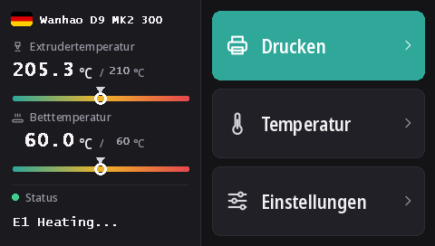

Den Touchscreen der Duplicator 9 flashen
Jede D9, von MK1 bis MK3, hat denselben DWIN-T5-Touchscreen (480 × 272). Mit diesen Firmwares läuft darauf DGUS Reloaded 2.0, unsere neue Oberfläche in 16 Sprachen, die von einer microSD-Karte geflasht wird.
DWIN_SET.zip herunterladen (DGUS Reloaded 2.0)
Was DGUS Reloaded 2.0 mitbringt
- 16 Sprachen: English, Français, Deutsch, Español, Italiano, Português, Nederlands, Polski, Türkçe, Русский, العربية, हिन्दी, 中文, 日本語, 한국어, Bahasa Indonesia. Zum Wechseln auf dem Startbildschirm die Flagge neben dem Druckernamen antippen; der Drucker merkt sich die Wahl.
- Eine Seite für den Filamentsensor: Einstellungen → Filament → Filamentsensor. Siehe Filamentsensor.
- Eine Statuszeile, die stehen bleibt: Die letzte Meldung, zum Beispiel Ready, bleibt auf dem Display, statt nach 30 Sekunden zu verschwinden.
- Temperaturanzeigen für Düse und Druckbett, mit markierter Solltemperatur.
- Ein neues Aussehen für jede Seite: dunkles Design, größere Schaltflächen, Piktogramme in den Pop-ups.

1. Die microSD-Karte formatieren
- Windows: Windows 11 formatiert oft nicht in FAT32; nimm GUIFormat und stelle die Größe der Zuordnungseinheit auf 4096.
- Linux:
sudo mkfs.fat -F 32 -s 8 /dev/sdX1(vorher das Gerät mitlsblkprüfen). - macOS:
sudo newfs_msdos -F 32 -c 8 /dev/diskN(mitdiskutil listprüfen).
2. Die Dateien kopieren
Entpacke DWIN_SET.zip und kopiere den ganzen Ordner DWIN_SET ins Stammverzeichnis der Karte.
3. Flashen
- Den Drucker ausschalten und den Netzstecker ziehen.
- Die Vorderseite des Sockels öffnen, um an die Rückseite des Displays zu kommen, wo sich sein microSD-Steckplatz befindet.
- Die Karte einstecken und einschalten. Das Display zeigt das Update nach 10 bis 30 Sekunden an; warten, bis es wieder normal startet, insgesamt 1 bis 3 Minuten.
- Ausschalten, die Karte entnehmen, den Sockel schließen.
Wanhaos Video zum Display-Update einer D9 zeigt, wo der Steckplatz sitzt.
Woher es stammt
DGUS Reloaded 2.0 zeichnet DGUS Reloaded 1.0.3 (von Desuuuu, dann Neo2003) Seite für Seite neu. Der Quellcode, das Programm, das die Displaydateien erzeugt, und die Übersetzungen liegen auf GitHub. Ein falsches oder holpriges Wort in deiner Sprache? Sag es uns auf Discord oder eröffne dort ein Issue.
Um zu DGUS Reloaded 1.0.3 zurückzukehren, zum Beispiel mit einer Firmware älter als v2.0.9, flashe DWIN_SET_1.0.3.zip auf dieselbe Weise.
Zurück zu Wanhaos Display
Wanhaos Display-Firmware funktioniert nur mit Wanhaos Mainboard-Firmware. MK1: die Displaydatei der passenden Version auf der MK1-Seite. MK1 + Kit, MK2 und MK3: DWIN_SET_MK2.zip. Gleiches Vorgehen.